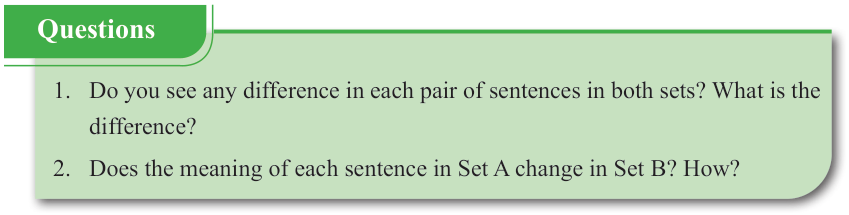
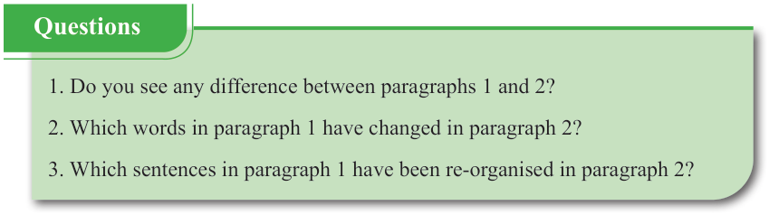

English for Secondary Schools Student’s Book Form One, printed page 102

Question box asking learners to compare each pair of sentences in two sets, identify the differences, and explain whether the meaning of sentences in Set A changes in Set B.Questions
1. Do you see any difference in each pair of sentences in both sets? What is the difference?
2. Does the meaning of each sentence in Set A change in Set B? How?
(b) Listen to the original and paraphrased messages read by your teacher. Then, answer the following questions:

Question box asking learners to compare paragraphs 1 and 2, identify words changed in paragraph 2, and find sentences from paragraph 1 that were reorganised in paragraph 2.Questions
1. Do you see any difference between paragraphs 1 and 2?
2. Which words in paragraph 1 have changed in paragraph 2?
3. Which sentences in paragraph 1 have been re-organised in paragraph 2?
(c) Practise the following dialogue. Then, answer the questions that follow.
[Two friends were on the way home while discussing paraphrasing. Their conversation was as follows]
Ooh! Worry not, let me help you. Let's start with the meaning of paraphrasing. It means using your own words to express a speech or text clearly without changing its original meaning. For instance, the sentence “She has been fond of watching games since she was young” simply can be paraphrased as “She has been enjoying watching games since her childhood”